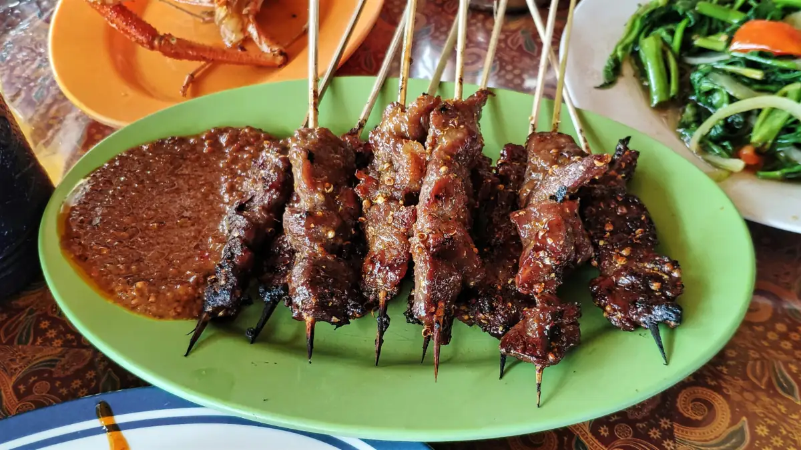
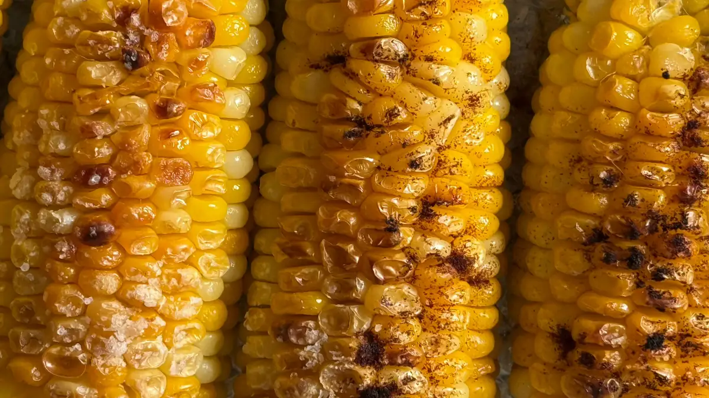

Sate kelinci khas Tretes disajikan hangat dengan bumbu kacang, menjadi kuliner ikonik yang wajib dicoba di udara dingin Prigen.Kuliner Tretes yang wajib dicoba adalah sate kelinci, jagung bakar, dan hidangan berkuah hangat seperti soto, karena cocok disantap di udara dingin kawasan Prigen.
- Apa Saja Kuliner Tretes yang Wajib Dicoba?
- Mengapa Sate Kelinci Menjadi Ikon Kuliner Tretes?
- Apa Daya Tarik Jagung Bakar di Kawasan Wisata Tretes?
- Apakah Soto dan Hidangan Berkuah Cocok untuk Udara Tretes?
- Kapan dan Di Mana Berburu Kuliner Tretes?
- Seberapa Besar Peluang Kuliner di Tengah Banyaknya Wisatawan Pasuruan?
- Bagaimana Tips Memilih Warung Kuliner Tretes yang Nyaman?
- Bagaimana Mengatur Konsumsi Rombongan Corporate Gathering di Tretes?
- Bisakah Kuliner Tretes Dihadirkan di Lokasi Acara?
- Apakah Kuliner Tretes Cocok untuk Keluarga dengan Anak?
- Kesimpulan
Apa Saja Kuliner Tretes yang Wajib Dicoba?
Kuliner Tretes yang wajib dicoba meliputi sate kelinci, jagung bakar, dan soto atau hidangan berkuah hangat, karena ketiganya paling sering dicari wisatawan di udara pegunungan.
Menjelajah wisata tretes terasa kurang lengkap tanpa berburu kuliner. Sebagian besar jajanan tersedia dengan harga relatif terjangkau, terutama pada malam hari ketika kawasan wisata ramai.
Mengapa Sate Kelinci Menjadi Ikon Kuliner Tretes?
Sate kelinci menjadi ikon kuliner Tretes karena cita rasa dagingnya yang gurih dan penyajiannya yang hangat cocok dinikmati saat cuaca pegunungan dingin.
Sate kelinci sering disebut sebagai mahkota kuliner Tretes dan menjadi incaran wisatawan dari Surabaya, Sidoarjo, hingga Malang. Daging kelinci umumnya diolah dengan bumbu kacang atau kecap, lalu disajikan bersama lontong atau nasi.
Bagi yang pertama kali mencoba, pilih penjual yang ramai dan proses memasaknya matang sempurna. Wisatawan yang memiliki alergi atau pantangan makanan perlu bertanya komposisi bumbu sebelum memesan.
Apa Daya Tarik Jagung Bakar di Kawasan Wisata Tretes?
Jagung bakar menarik di kawasan wisata Tretes karena aromanya harum, disajikan hangat, dan paling nikmat dimakan sambil menikmati kabut serta keramaian lalu lintas wisata.

Jagung bakar khas Tretes dengan berbagai pilihan bumbu, camilan hangat favorit wisatawan di kawasan Prigen.Jagung bakar menjadi alternatif jajanan kaki lima setelah sate kelinci. Pilihan rasanya biasanya meliputi bumbu manis, pedas, atau keju. Harga dapat bervariasi tergantung lokasi dan ukuran jagung.
Apakah Soto dan Hidangan Berkuah Cocok untuk Udara Tretes?
Soto dan hidangan berkuah cocok untuk udara Tretes karena kuah panas membantu tubuh tetap hangat setelah beraktivitas di ketinggian 600 sampai 900 mdpl.
Rumah makan di jalur menuju Tretes dan Prigen kerap menyajikan soto dengan rasa hangat yang pas.
Daftar rumah makan besar di jalur Prigen dapat ditambahkan sesuai ketersediaan terbaru dan hasil kunjungan langsung.
Kapan dan Di Mana Berburu Kuliner Tretes?
Waktu terbaik berburu kuliner Tretes adalah sore hingga malam hari, terutama di Sentra Kuliner Tretes dan sepanjang jalur wisata Prigen yang ramai pengunjung.
Sentra Kuliner Tretes menjadi bagian khas wisata malam kawasan ini dan nikmat disantap saat cuaca dingin. Hari kerja biasanya lebih lengang, sedangkan akhir pekan membutuhkan kesabaran menunggu antrean.
| Waktu | Kegiatan Kuliner yang Cocok |
|---|---|
| Siang | Makan berat di rumah makan, soto, atau nasi |
| Sore | Camilan hangat dan minuman jahe |
| Malam | Sate kelinci, jagung bakar, dan kuliner pinggir jalan |
Seberapa Besar Peluang Kuliner di Tengah Banyaknya Wisatawan Pasuruan?
Peluang kuliner di Tretes besar karena Pemkab Pasuruan mencatat sekitar 2,1 juta kunjungan wisatawan pada 2024 di sekitar 38 destinasi, sehingga permintaan makanan tetap tinggi.
Data tersebut dipublikasikan oleh Pemerintah Kabupaten Pasuruan. Angka ini bukan data penjualan kuliner, tetapi menunjukkan jumlah wisatawan yang berpotensi mencari makan di sekitar destinasi, sehingga kuliner Tretes ikut menjadi bagian penting dari perjalanan.
Bagaimana Tips Memilih Warung Kuliner Tretes yang Nyaman?
Warung kuliner Tretes yang nyaman dipilih dari kebersihan area masak, kejelasan harga, antrean yang wajar, dan kesesuaian menu dengan kebutuhan rombongan.
- Pilih tempat dengan perputaran pembeli yang jelas.
- Tanyakan harga sebelum memesan, terutama saat musim liburan.
- Perhatikan area cuci tangan dan kebersihan peralatan.
- Hindari memesan terlalu banyak sekaligus saat rombongan belum lengkap.
Harga di kawasan wisata dapat bervariasi tergantung lokasi, musim, dan porsi, sehingga tidak ada patokan tunggal.
Bagaimana Mengatur Konsumsi Rombongan Corporate Gathering di Tretes?
Konsumsi rombongan corporate gathering di Tretes diatur dengan memilih model penyajian, menghitung jumlah peserta, mencatat pantangan makanan, dan menetapkan jam makan sesuai jadwal acara.
Panitia sering bingung memilih antara nasi kotak, prasmanan, atau makan di restoran. Pilihan terbaik bergantung pada jumlah peserta, durasi acara, dan fasilitas lokasi.
| Model Konsumsi | Kelebihan | Hal yang Perlu Diperhatikan |
|---|---|---|
| Nasi kotak | Praktis, cepat dibagikan | Variasi menu terbatas |
| Prasmanan | Peserta bebas memilih | Perlu area dan waktu antre |
| Restoran | Suasana santai | Kapasitas dan reservasi |
| Kuliner khas dibawa ke lokasi | Pengalaman khas Tretes | Perlu koordinasi vendor dan izin lokasi |
Bisakah Kuliner Tretes Dihadirkan di Lokasi Acara?
Kuliner Tretes dapat dihadirkan di lokasi acara dengan koordinasi vendor, misalnya gerobak sate kelinci atau sesi bakar jagung, selama lokasi mengizinkan dan jumlah peserta sudah jelas.
Batu Camping memiliki area BBQ dan api unggun di area camping sesuai paket yang dipilih, dan paket camping yang dapat menjadi referensi konsep acara.
Untuk acara outbound di kawasan Tretes dengan konsumsi khas, panitia dapat mendiskusikan kebutuhan, termasuk katering, sesi bakar-bakaran, atau penghadiran kuliner lokal, melalui halaman booking.
Apakah Kuliner Tretes Cocok untuk Keluarga dengan Anak?
Kuliner Tretes cocok untuk keluarga dengan anak karena pilihan hangat seperti jagung bakar dan soto mudah dinikmati, asalkan tingkat pedas dan kematangan makanan diperhatikan.
Orang tua sebaiknya meminta bumbu terpisah untuk anak dan memastikan makanan benar-benar matang. Bawa air minum hangat agar anak tidak kedinginan saat menunggu pesanan.
Kuliner Tretes berpusat pada sate kelinci, jagung bakar, dan hidangan hangat yang cocok untuk udara dingin Prigen, terutama saat sore dan malam.
Kesimpulan
Menjelajah kawasan wisata Tretes di Prigen, Pasuruan terasa kurang lengkap tanpa berburu kulinernya.
Perpaduan udara dingin pegunungan dengan hidangan hangat seperti sate kelinci yang gurih, jagung bakar beraroma khas, serta soto berkuah panas menjadi daya tarik utama yang selalu diburu wisatawan.
Baik untuk liburan keluarga, santai malam minggu, hingga konsumsi acara corporate gathering, ragam kuliner khas Tretes menyajikan pilihan hidangan hangat yang praktis, lezat, dan berkesan.
FAQ (Pertanyaan yang Sering Diajukan)